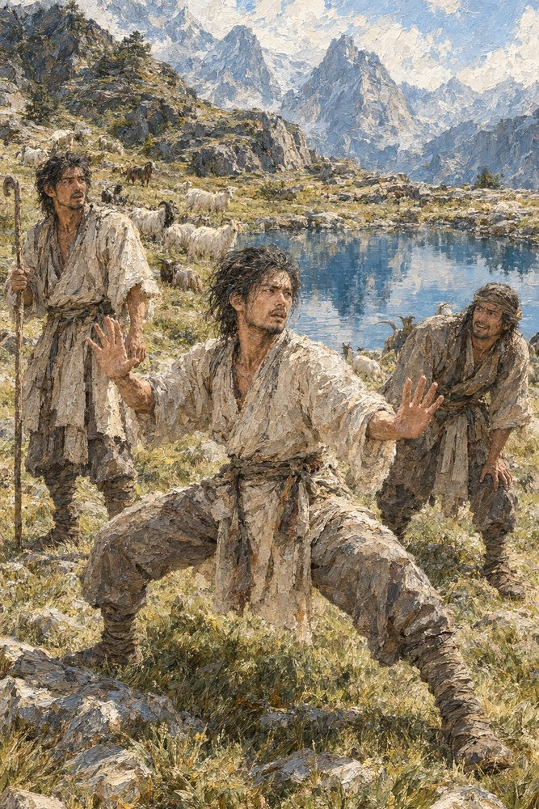

Record 2 of 11
The southern grazing bank, four days after the master died: Bai Rong rises from the water in a stance no shepherd was ever taught, weight low and both palms out, while Chen Wu and Fang stare at him with the flock grazing behind
A dark-haired shepherd in a pale hemp tunic stands low with both palms turned outward beside a blue mountain pool, a shepherd with a crook looking on at his left and a third in a headband bending toward him at his right, a flock of goats grazing on the slope behind.